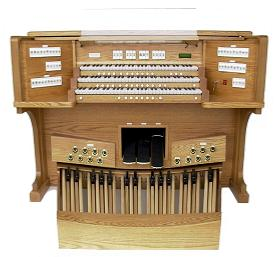

D.L. Simmons & Company Church Organs
SERVING: ALABAMA / FLORIDA / MISSISSIPPI / LOUISIANA / GEORGIA

TAB ORGAN CONSOLES


Standard tabs are lighted with LEDs. This means that the tabs operate silently and there are no bulbs to ever have to replace. The tab action can be configured in one of 2 ways: a) the standard way is with a toggle action with On and Off at either top or bottom of the tab. b) is 'On' at bottom and 'Off' at top. Normal operation is 'On' and 'Off' alternating at both the top and bottom of the rocker. These tab stops are extremely dependable. In most cases they are placed on the panel above the top manual but when there are too many to fit across the top we place them on side panels. In this case, a wider drawknob-style console is necessary. Side tabs make it possible to build organs with large numbers of stops at much lower cost than equivalent drawknob organs. For those wishing to have traditional moving tabs we can provide them in a variety of styles but the cost ends up being almost the same as a drawknob organ.
Model Numbers:
P = Phoenix; D = Drawstop; T = Tab; first digit = number of manuals; last digits = number of speaking stops.
Choose a Model below for more information
PT 237
PT 243
PT 335
PT 346
PT 367
Low-Profile Console
Additional configurations available
Model Numbers:
P = Phoenix; D = Drawstop; T = Tab; first digit = number of manuals; last digits = number of speaking stops.
Choose a Model below for more information
PT 237
PT 243
PT 335
PT 346
PT 367
Low-Profile Console
Additional configurations available

WEBSITE CONTENTS COPYRIGHT© 2016
DL SIMMONS & COMPANY CHURCH ORGANS
DL SIMMONS & COMPANY CHURCH ORGANS